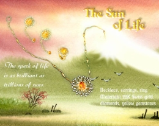

Le Soleil de la vie  L'étincelle de la vie est aussi brillante que des milliards de soleils. Collier, boucles d'oreilles, et bague En or suisse 22 carats, diamants, pierres précieuses jaunes
L'étincelle de la vie est aussi brillante que des milliards de soleils.
Collier, boucles d'oreilles, et bague En or suisse 22 carats, diamants, pierres précieuses jaunes